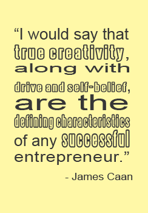
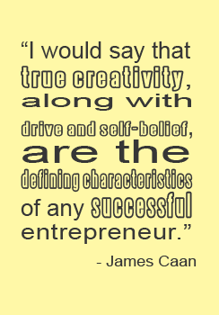

Creativity in the Workplace
5 Ways to Encourage Creative Thinking
This article made me think about creativity in a more distant spectrum, the work place. It made me think about my creative process and how it can be applied in the work force. It also taught me about how important it is to foster the creative process in order to end up with creative concepts.
One thing that companies might benefit from is allowing their employees to have the time to be creative. Rushing employees to come up with creative concepts in unrealistic time restraints will most likely create unwanted results. If you want your employees to be innovated, it is important to give them the time and space to come up with thise ideas.
Another way to harvest ideas is to work collaboratively. This is something that I want to practice as I continue in the field of web design. Being able to bounce ideas off of one another and give constructive feedback can be very beneficial. Redesigning and refining can bring a project to a new level.
The last point that really spoke to me was the idea of creating the right culture to promote creative ideas. Creating a fun and positive environment boosts morale and the ability to think freely, thus enabling creative thinking.